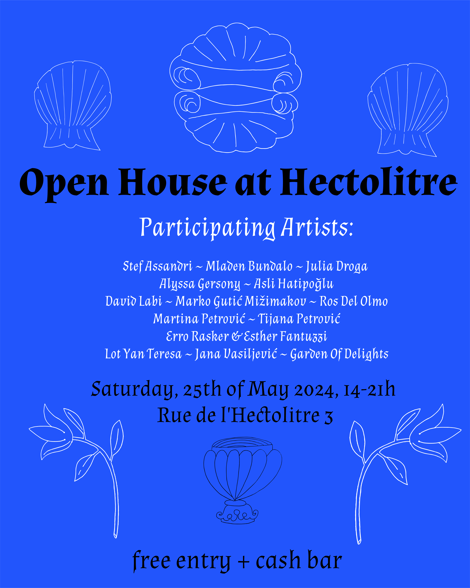

Open House @Hectolitre
Hectolitre Art Space opens all of its doors for a whole day of performances, workshops, publications, food and drinks
-
May 25th, 2024 at 14:00 until 22:00
free entry + cash bar
Hectolitre (1st,2nd and the 3rd floor, Reactor)
-
Rue de l'Hectolitre 3,
1000 Bruxelles
-
Come by Hectolitre for a full day of performances, art, screenings, publications, food and drinks. The building will be activated by artists living and working in Hectolitre, as well by past and honorary residents. On Saturday the 25th of May, we invite you to follow your curiosities: Reactor, garden, 1st, 2nd, 3rd floors & the Trait d'Union will be open. The program will start at 14h and end by 21h.
Hectolitre is a space dedicated to artists who wish to dive deeper into their projects, experiment with transdisciplinarity and connect their art form/research to the neighborhood. On this Saturday we invite you to experience them in their living and working environment. Hectolitre fosters a wide variety of artistic practices, providing an enriching opportunity to gather diverse artistic perspectives and foster a dynamic creative synergy among different artists.
-
PROGRAM
14.00 - 14:30>>> start from Reactor to the 3rd floor
Building walkthrough and opening toast
14.30 - 15.15>>> 3rd floor
DADvertisement, performance by David Labi
15.30 - 17.00>>> 1st and 2nd floor
The echoes of silence veiled by the mist of history
showing by stef assandri feauturing Ros Del Olmo
max 20ppl, inscribe at the bar in Reactor
17.00 - 18.00>>>Reactor
surface treatments, drag performance by Alyssa Gerssony and Marko Gutić Mižimakov
18.15 - 19.00>>> 3rd floor
DADvertisement,performance by David Labi
19.30 - 20.30>>>Reactor
I touched my skin and dissolved
performance by Erro Rasker & Esther Fantuzzi
20.30 - 21.00>>>Reactor
Closing Drinks
Ongoing installations through the whole day:
About money and migration, a video installation with 2 videos in loop: Hyperinflation (2018) and Hypermigrations (2021) by Mladen Bundalo
>>>1st floor shower in Reactor
Gastarbajter’s guide through poetic possibilities (0.1) opening of a research by Tijana Petrović
>>>studio on the 2nd floor in Reactor
Est ce que c’est jouable?, a video installation by Salomé Genès, Julia Droga, and Hugo Boutry
>>>1st floorin Reactor
Sēres, a video installation by Alyssa Gersony & Aslı Hatipoğlu
>>>Jacuzzi in Reactor
Publication Table- Launch of publication The Red Thread by Jana Vasiljević & Martina Petrović & Garden of Delights
>>>Reactor next to bar
Seeds and stories of imagined lands, installation by Lot Yan Teresa
>>>Garden
Asli's pop-up kitchen, throughout the day there will be snacks and Thai food available for purchase prepared by food artist Aslı Hatipoğlu
>>>3rd floor, Reactor, Garden
-
DADvertisement
a 45 minutes – Mixed standup/monologue about fatherhood with one or two light activities for participants to engage their views.
What do we want fathers to be? What do they actually do? And why are they such idiots?
A humorous and creative interrogation of fatherhood – combing comic and emotive storytelling with a workshop activity for participants. How has the role/concept of fatherhood changed in our societies, in our lifetimes? What do we expect from fathers today, and is it still relevant to divide parents by gender? The name "Dadvertisement" speaks of today's internet-packaged super dad, plus the French "avertissement" (warning) – about the potential pitfalls. Is trauma inevitable?
David Labi is an ethical storyteller through his agency Good Point, and performer of the critically acclaimed comic one-man show Pieces of a Man, about his own father, which has been touring Europe lately including at Berlin's legendary Volksbühne and London’s Charing Cross Theatre (this June). Now a dad himself of a 9-month-old baby, he is preparing his next show, and will use this opportunity to try some material and engage with participants on the universal and enigmatic topic of fatherhood.
-
http://davidlabi.com/
-
The echoes of silence veiled by the mist of history
I opening of an artistic process that lasts around an hour.
It is divided into three acts. It investigates the subtexts, the interruptions in the narrative, the diaspora and migration processes, next to effect of protocol and food as a multipolar experience. We are interested in activating a double space and "itineration" as we were busy talking about information glitches, diffusion, censorship, media literacy, and criticisms; besides parallel narrations of experience and testimony (both verbal and nonverbal).
The audience is invited to go up to the first floor (max 20 people). In the living room on the first floor, the "intrusion" of the main narrative unfolds.
The reading ends with an invitation to go up to the second floor where the participatory performative work in progress by stef assandri will be presented. Followed by an after-talk of about 30min with plant-based sandwiches.
Ros Del Olmo is a writer who articulates their artistic practice between Spain and Belgium. Departing from journalism and humanities, they do poetry, while experimenting with radio formats and collective performance. Their research hovers over questions around potential cuir habitabilities, critical genealogies, and collective writing-reading, beyond the binaries dispositions of language making. Ros have published their poems in several magazines and anthologies and co-directed the creative residency for writers Conejillo de Verano with Plataforma BajoTeja, an art mediation platform active between the Spanish rural and urban landscapes. Ros works currently in rile* books and they like to think of voice as an ephemeral liquid that stains but leaves no trace.
-
insta
https://www.instagram.com/rosdelolmo/?hl=fr
-
stef assandri is an artist, researcher and designer. Born in Montevideo in 1989.
In recent years, they have been exploring and researching practices that relate migration, gender, anti-speciesism, through writing, performance and costumes.
They also work collectively on projects –in Uruguay, Spain and Belgium– that address issues of gender and ecologies. With Renata Lamenza, they conducted and co-created the research project TACTICS for a COLLECTIVE BODY (2020-2022) at School of Arts, University of Antwerp. Stef collaborated with artists of the Fundación de Arte Contemporáneo in Uruguay, and co-directed and performed on Bailamos Siempre Las Mismas Canciones in Montevideo (2017-2018), Uruguay.
-
website
https://linktr.ee/assandri.tif
-
Entangling streams of consciousness
A collective automatic writing ritual that will take abut 45min. We begin with a meditation and then enter our streams of consciousness, daydreams, and wandering thoughts: an embodied form of thinking. As we write, we fall into a collective rhythm, each of us working at a different pace and tone within that rhythm, and perhaps entangling somewhere down the text.
Dominique De Groen (°1991) is a poet, writer and visual artist. Her work was published in Deus Ex Machina, Kluger Hans, Gierik & Nieuw Vlaams Tijdschrift and on Samplekanon and hard//hoofd. Her debut collection Shop Girl (2017) was published at the Balance Sheet, followed by Sticky Drama (2019), Offerlam (2020), Slangen (2022), Counterforces (2023) and Dominique De Groen meets Hilma af Klint (2023). She posts poetry and visual work on www.vulpix91.be .
-
http://hetbalanseer.be/auteurs/dominique-de-groen/
-
surface treatments
one hour drag performannce
Alyssa makes solo performances that research the formal possibilities and political implications of choreographing a singular body in space. As an improviser, she works with episodic memory to develop maps of affective embodiment, described as “equally disturbing and impressive.” She is currently experimenting with performative modes of co-habilitation, approximation, and time travel - topics emerging from the last 2 years of artistic research in Rīga and Brussels. Her creative process integrates dance, choreography, interactive media, and scenography.
-
https://www.alyssagersony.com/
-
Marko Gutić Mižimakov is an artist working with animation, performance, text, sound and collaboration.
Often in drag, interfacing with machine learning & conch shells.
-
https://performing.site/
-
I touched my skin and dissolved
is a set of analogue projections that combines the practice of live cinema with sound.
On stage, two musicians and a projectionist who, like an archer, operates the projector, a device that acts as a collector of archived, collective dreams, whose forms highlight the language of disappearance, ghosts and empty landscapes and, through scratches, tapes and
grooes, gives consistency to memory. Each scratch on the film, each groove on the tracks, becomes a fragment of a larger narrative, a narrative that unravels through the fabric of time. A performance that by the very nature of the emulsion and the filmic material is destined to
corrode and disappear, towards a principle of decomposition.
Working by intuition, in the fusion of the sound element and the audiovisual material, the performance returns sonic ruptures that, like memory holes and distortions, observe and form the mosaic of a disappearance.
-
Esther Fantuzzi is an Italian visual artist whose research stands at the intersection between the use of analogue cinematic tools, writing practices and performance. Esther transforms visual space into a laboratory for collective exploration, considering her artistic practice as a response to the homogenisation of the image and the hyper-production of the film market. Strongly linked to the recovery of pre-existing material as her main tool of investigation, she recomposes films, archive material and uses live projections, around the idea of a traversable and multisensory cinema, which draws new boundaries through development and independent production as an act of resistance. The concept of participatory and interdisciplinary cinema is at the heart of his artistic approach, in which cinema is not only a narrative tool, but becomes a means of drawing new borders.
-
Erro Rasker is a visual artist, designer, scenographer and writer.
He creates works and installations in-situ, starting often from a pragmatic necessity. His work fulfills a spatial demand - a need for more light, for comfort or warmth.In parallel, his work possesses a second, performative aspect. He sees his work as characters in a space who take an active role in their environment, and in turn change their environment. Their status falls between scenographic ‘prop’ or set piece, and performer, antagonist.
-
https://www.instagram.com/rask.errrr/
-
About money and migrations
a video installation with 2 videos in loop: Hyperinflation (2018) and Hypermigrations (2021) with a wall-mounted text speculating on uncertainty of value and movement - based on Heisenberg's uncertainty principle
Mladen Bundalo, born 1986 in Prijedor, Bosnia-Herzegovina, ia an interdisciplinary artist working on visual-dialogical systems that address movement, exchange, value, inflation, and uncertainty, as nodal categories in the experience of modern society.
Lives and works in Brussels.
-
http://www.mladenbundalo.com/
-
Gastarbajter’s guide through poetic possibilities (0.1)
is an ongoing research that began with a book of the same name. The book is a collection of un-poetic poems, translated interviews, and cacophonic voices that are loud, that interrupt each other and that want to be heard.
These poems were created from the conversations and interviews conducted with migrated or seasonal workers that come to the West to work. The original language and the volume, the interruptions and pauses found their possible translation in the form of the poems.
This installation (0.1) is a further effort to explore the language, tools, and strategies for presenting a peripheral experience without exposure and on its terms.
-
Tijana Petrović (born in 1997. in Belarus) is a Serbian artist and researcher who has situated her artistic questions in geopolitical, critical institutional framework across various forms of artistic expression from performance, and video-performance to text art and textual, discursive practices and conversations. A significant segment of her work is directed towards an active pondering of contemporary social and political problems, both in Serbia and in broader terms. Her interests are directed towards a practice of imagination, and storytelling, as well as to the concrete proposals of the new narratives.
-
https://tijanapetrovic.com/
-
Est ce que c’est jouable?
is a proposition by Salomé Genès, Julia Droga, and Hugo Boutry,realized from a participative performance involving Léo Rottmann, Phyllis Dierick, Johanna Gratzer, Paloma Bouhana, Federica Costanza Fantini, Sophie Vendryes, Chloé Payen, Pauline Lecerf, Julie Dupont, and Laura Battistella.
Sound composition by Julien Solinas.
By decontextualizing the mosh pit from its initial mode of appearance, we question this practice to reconsider new ways of interacting: What can our bodies teach us aboutinterpersonal relationships that occur within a collective? By creating a cathartic zone to
generate joy and physically challenge our bodies, we seek to engage with each other in a shared and symbolically contested space through this practice. Individuality confronts a temporary and liberating mass state in which power dynamics are replayed, ritualized, and verbalized to emancipate oneself.
Est ce que c'est jouable? is an invitation to join sessions of pogo organized among fxmme identified persons in different spaces in the city. To participate or learn more about the project, contact: : juliadroga41@gmail.com
Julia Droga is engaged in the field of performance and visual arts. Her creations integrate concepts such as provocation, memory, death, money, and time in connection with personal experiences. Her practice relies on modes of self-mediation that become a necessity to translate a desire within her own fictions.
-
https://julia-droga.com/
-
Salomé Genès works in the fields of Performing and Visual Arts as a choreographer, dramaturge, and dancer. She bases her research on empirical knowledge, seeking to generate and welcome other individuals who will in turn problematize their experiences. She believes in the potential inherent in gestures, forms, experiences, and their reactivation in the creation of situations. She sees transmission as a form of art.
-
Hugo Boutry, born in Amiens in 1995, has been living and working in Brussels since 2014. As a photographer and videographer, I work in relation to devices to create images. I seek to give shape to these relationships and to translate into images the feelings embedded in the blac box between my hands. It's a toy that I shake in all directions as if to make it explode; I would like to fill it with everything it's not supposed to see, from cracks that surface in the images.
-
Julien Solinas, also known as Collisbrone, trained in musical and sound creation at the University of Paris 8, continues his research and creation from Germany to Belgium. His music resonates with a diverse repertoire, between saturated timbres, granular abstraction, minimalist influence, and dissonant harmonies.
-
https://soundcloud.com/collisbrone
-
Sēres
an Anciebt Greek word for silk, is a dance film essay consisting of 11 chapters that reflect on the relationship between humans and the domesticated silkworm species Bombyx Mori.
a video installation by Alyssa Gersony & Aslı Hatipoğlu
-
Aslı Hatipoğlu (TR/TH, 1990) is a textile culinary artist based in Brussels and Amsterdam. Her work often relates to topics such as ecology and sustainability and the challenges it imposes on our daily lives in complex systems of consumption. She is interested in science and what it can offer as well as the dangers it imposes (such as domination over nature and genetic modifications) that bring ethical questions towards our future as species. Through investigating ancestral knowledge with a community building approach, Asli is also interested in fusing diversity of her knowledge among her experiments in different environments. She often creates interactive installations, video work or uses performative storytelling through conceptual dinners as a way to bring topics of her interest forward. She currently collaborates with artists from various fields on different topics that conceptualises on dinner table.
After working several years as a self-taught chef, Asli deepened her knowledge with fermentation during her residency at the Food Lab Jan van Eyck Academie 2020-2021, along participating in several festivals such as Food Art Film Festival JVE (NL), Foodculture Days Vevey (CH), Oerol Terschelling (NL), Japanese Knotweed Festival at Mediamatic (NL) and Zamus Theaterhaus Cologne (DE) . Her works were exhibited in places such as Zuiderzee Museum in Enkhuizen, Framer Framed in Amsterdam, Fanfare Amsterdam, Perdu Amsterdam, Het Nieuwe Instituut Rotterdam, Jan Van Eyck Academie Maastricht. She has hosted many dinners since 2015, among the project called Fantasies, a blind-fold culinary journey with musician Roy Amotz across Europe.
-
Asli's pop-up kitchen
Aslı will also prepare some thai food for the event opening and closing, bring some cash. ;)
-
https://www.instagram.com/_aslihatipoglu/
-
Seeds and stories of imagined lands
an installation by Lot Yan Teresa
-
Lot Yan Teresa is an artist-researcher mainly active as mover, writer and maker. Since 2017, she has been training and working with dance and interdisciplinary creation. She has a background in art history and anthropology, and was many years engaged in participative social-political research on dislocation, territory and difference. More recently, she started to connect her writing to her movement practice, exploring traces and reminiscences of inner bodies and imagined lands. Besides her artistic work, Lot is also active as a massage therapist.
Her practice has been mainly based in Brazil and has been recently connected to Brussels as well. In her last projects in Rio de Janeiro, she proposed choreographic practices in collaboration with a sound artist and a visual artist (PAISSAGEM PLAY, 2022; MYSTOPIA reverse, 2023; Theatre Sergio Porto). These performances were related to her work as movement pedagogue, including people with special needs/sensibilities. A part of the research has been carried out in residency at CAMPO arte contemporânea in Teresina, Brazil; where she shared a preliminary sound and video installation.
During the current residency of reflection at Hectolitre, Lot will focus on research and writing for her most recent project VESTIGIA
-
https://www.buda.be/en/residentie/vestigia-working-title
-
The red thread
Launc of publication by Jana Vasiljević & Martina Petrović & Garden of Delights
The Red Thread is an art publication on witchcraft and rituals. It is a poetic result of ongoing research on Balkan rituals, magic and witchcraft by Jana and Marina. It is a result of the residency at The Native Museum of Homolje in Žagubica, supported by Culture Moves Europe.
-
https://cargocollective.com/TheLastStraw/The-Red-Thread
-
Garden Of Delights - G.O.D. - is an art collective exploring the hidden structures and power dynamics underlying unrecognised and invalidated labour. Their playful communal research ventures into the swamp of pleasure, work, craft, chore, art, skill, dilettantism and the greatness of what is often only considered ‘the little things’.
-
https://gardenofdelights.hotglue.me/
-
Jana Vasiljevic is a multidisciplinary artist with a background in storytelling, illustration and community arts. In her practice, she alternates between intimate works with a focus on personal stories alternate with a more collaborative practice in which community central. She is a a member of the collectives Tieten Met Haar and Les VoiZines, which focus on alternative comics, zines and DIY publications. She is also a co-founder of the collective Garden Of Delights, which explores hidden structures and power dynamics that underlie unrecognized and unappreciated labor.
-
https://cargocollective.com/janavicost
-
Martina Petrovic is a multimedia artist and adventurer born in 1987. in Belgrade, Serbia.
Her art mainly concentrates on the exploration of socially generated emotional conditions such as grief, but also precariousness, pressure, angst, animosity, etc. in relation to the loss of values, damage made to the environment and sense of misplacement. In her art practice she is focused on cultural identities, activism, social engagement, everyday life and rituals. The question that has guided her work is: How aware are we of the consequences of our actions and behavioral habits? I wish to focus on the visual artist’s role in encountering social ecological problems of today by merging art with other fields such as science, education, collaborative praxes, etc.
-
https://cargocollective.com/TheLastStraw
-
Come with curiosity, openness and a friend, the day will have a program so people are welcome to join for the moments and disperse in others.
See you soon!!